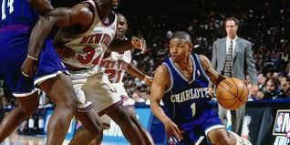

Tyrone Curtis "Muggsy" Bogues (born January 9, 1965) is an American former basketball player. The shortest player ever to play in the National Basketball Association, the 5 ft 3 in (1.60 m) Bogues played point guard for four teams during his 14-season career in the NBA. Although best known for his ten seasons with the Charlotte Hornets, Bogues also played for the Washington Bullets, Golden State Warriors, and Toronto Raptors. After his NBA career, he served as head coach of the now-defunct WNBA team Charlotte Sting.
Check out stats below
